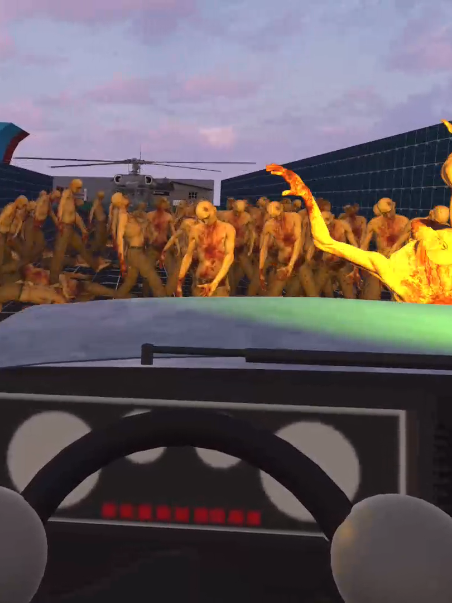
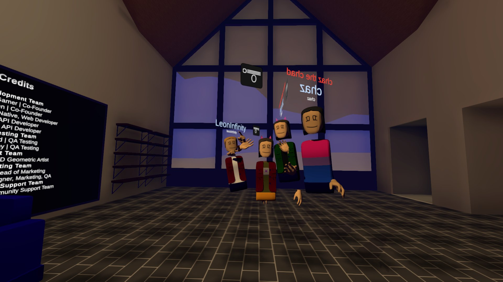
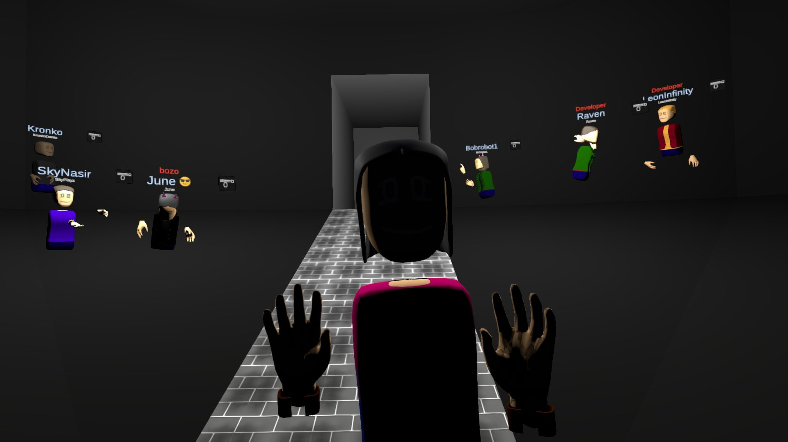

Projects
| VRD 264 • January - May 2025 | |||
|---|---|---|---|
|
While taking VRD 264 at Cochise College, I created a number of advanced and interconnecting systems, including:
|
 | ||
| VRD 144 • August - December 2024 | |||
|
During my time in VRD 144 at Cochise College, I created a fully physics-based player rig for VR games. The rig integrated physically-based climbing, grabbing, and movement, creating emergent and intuitive game mechanics from simple behavior. These mechanics included functional ice climbing using ice axes, sliding down a zipline with a crowbar, and climbing a radio broadcast tower in VR. |

|
||
| Compensation Social • 2021 - 2023 | |||
|
Compensation Social was a live-service multiplayer VR game I developed for the Meta Quest series of headsets as well as tethered VR. I worked alongside a small team of developers as the lead backend developer and head artist. I developed and maintained the backend system the game used to manage player data over the course of the game's 3-year lifecycle. I also developed the UGC creation tools of the game, which were -at the time- entirely unmatched on standalone VR. At its peak, Compensation amassed over 200 registered users. |
 |  | |